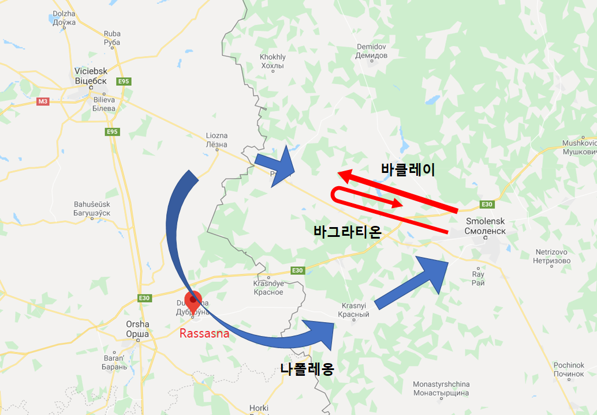
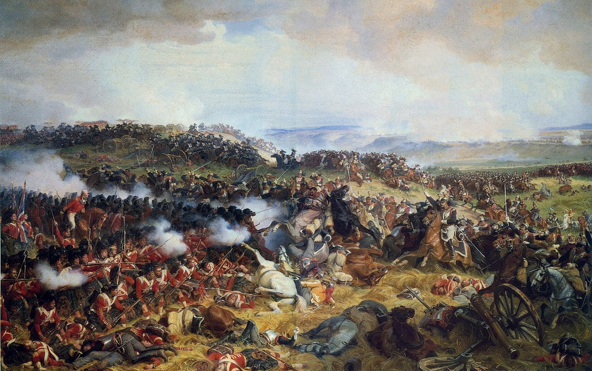

엇갈린 발걸음 - 스몰렌스크 전투 (2)
게시: 2020-03-23T06:30:41+09:00
바클레이가 7일 밤 바그라티온과 플라토프에게 보낸 명령서는 2가지에 있어서 문제가 있었습니다. 첫째, 독일인 특유의 무뚝뚝함 때문인지 원래 바그라티온과의 껄끄러운 관계 때문이었는지, 바그라티온은 그냥 '우회전하여 전진'이라는 퉁명스러운 명령만 들어있었을 뿐, 그 이유에 대해서는 별 설명이 없었습니다. 그 때문에 바그라티온은 영문을 몰라 당황했고, 일단 명령에 따르기는 따랐지만 마음 속으로는 바클레이에 대한 불신과 불만이 점점 커졌습니다. 둘째, 그나마 플라토프에게는 아예 명령서가 도착하지 않았습니다. 이런 일은 당시 전장에서는 종종 벌어지는 일이었습니다. 무선 통신도 없고 GPS도 없고 항공 정찰도 없으니 아군끼리도 넓은 지역에서는 상호 교신이 안 되는 경우가 많았습니다. 여담이지만 1815년 워털루 전투에서 나폴레옹은 그루시(Grouchy)의 부대가 나타나지 않자 한참 동안 '그루시는 어디에 있는가 (Ou est Grouchy?)' 라고 중얼거리다 결국 술트에게 전령을 몇 명이나 보냈는가를 물었습니다. '1명'이라는 대답을 받자 '(평소 나폴레옹의 참모장이었으나 그때는 이미 사망했던) 베르티에라면 각기 다른 길로 적어도 3명은 보냈을 것'이라며 탄식했다는 이야기가 있지요. 그렇게 해서 다음날인 8일, 바클레이와 바그라티온의 부대는 북쪽으로 우회전하여 포리에치(Poriechie)로 진격했는데, 선봉인 플라토프의 기병대는 그것도 모르고 비텝스크 방면으로 혼자 용감하게 진격을 계속 했습니다. 뿐만 아니라 인코보(Inkovo)에서 프랑스군의 선두이던 세바스티아니(Horace François Bastien Sébastiani) 장군의 기병대와 격돌하여 신나게 공격을 개시했습니다. 뜻밖의 반격을 당한 세바스티아니는 수백의 사상자를 내며 후퇴해야 했고, 플라토프와 팔렌은 이 작은 승리에 크게 기뻐했습니다만 당연히 이들은 후방에서 몰려오는 다른 프랑스군 부대에게 곧장 밀려나야 했습니다. 플라토프의 작은 승리는 당연히 곧장 나폴레옹에게 보고되었습니다. 나폴레옹은 즉각 러시아군이 반격을 시작했다는 것을 눈치채고는 이번에야말로 러시아군을 놓치지 않고 쌈싸먹을 준비를 했습니다. 그는 의붓아들인 외젠(Eugene)에게 최전방의 네(Ney)를 지원해주도록 지시하고는, 다른 모든 병력을 모두 남쪽의 라사스나(Rassasna, 아마도 현재의 Dubrowna 지역인 듯) 쪽으로 달려가도록 했습니다. 이 쪽은 프랑스군이 플라토프의 러시아군이 있는 방향을 바라볼 때 훨씬 우측 방향이었습니다. 나폴레옹은 러시아군의 정면을 네와 외젠으로 묶어두고, 주력은 러시아군의 좌익을 크게 우회하여 라사스나에서 아예 드네프르(Dnieper) 강을 도강한 뒤, 텅빈 스몰렌스크를 남서쪽으로부터 덮칠 생각이었습니다. 그렇게하면 러시아군의 퇴로를 끊은 상태에서 섬멸할 수 있다고 생각했던 것이지요. 이렇게 나폴레옹이 덫을 놓고 있는 것을 모른 채 바클레이와 바그라티온은 포리에치로 행군을 하고 있었습니다. 그런데 여기서 바클레이는 다시 정보를 입수합니다. 포리에치에 프랑스군이 없다는 소식이었지요. 뭐 어쩌겠습니까 ? 바클레이는 '뒤로 돌아, 원위치로' 명령을 내렸습니다. 이때 상황 설명과 사과 내지는 변명이라도 함께 주었으면 모르겠는데, 이번에도 바클레이는 아무 군더더기 없이 그저 뒤로 돌아 행군 명령만 전달했습니다. 영문을 알 수 없었던 바그라티온은 점점 더 속이 끓었는데, 마침내 원위치에 도착하자 또 아무 설명 없이 방향을 바꿔 행군하라는 명령이 날아왔습니다. 바그라티온은 폭발했습니다. 그는 더 이상 독일인들로 구성된 사령부에 복종하지 않기로 하고 제멋대로 그냥 스몰렌스크 방향으로 후퇴해버렸습니다.

(대체 바그라티온은 무슨 생각으로 저랬던 것인지... 아무리 상남자라도 저러면 안 됩니다.)
원래 군부대의 행군은 순서와 대열 유지, 탄약과 보급품 등의 수송 등으로 인해 순조롭게 이루어진다고 해도 꽤 복잡했습니다. 그런 와중에 부대간 교신도 잘 안 되는 와중에 이렇게 이리저리 방향을 바꾸다 아예 일부 부대가 완전히 반대 방향으로 움직이니, 당연히 비텝스크와 스몰렌스크 사이의 러시아군 부대들은 대혼란에 빠졌습니다. 게다가 바클레이의 입장은 정말 난처해졌습니다. 전체 병력의 1/3이 이탈한 상태에서 이대로 곧장 프랑스군을 향해 앞으로 나간다면 중과부적으로 격파당할 것이 뻔했습니다. 그렇다고 이대로 후퇴하는 것도 답이 아니었습니다. 그렇지 않아도 군 내부에서 입지가 흔들리고 있는 와중에 명령에 불복종하는 바그라티온의 뒤를 따라가는 것도 우스웠고, 또 결국 프랑스군과 결전을 벌이기는 해야하는데 그러자면 드네프르 강을 등 뒤에 끼고 싸우는 것보다는 여기서 싸우는 것이 더 유리했으니까요. 이때 나폴레옹이 우회 작전을 쓰지 않고 그냥 묵직하게 정면 공격을 택했다면 쉽게 러시아군을 박살냈을 수도 있었을 것입니다. 하지만 이때 나폴레옹은 대군을 휘몰아 우왕좌왕하는 러시아군들을 피해 크게 우회하느라 바빴습니다. 8월 14일 새벽, 에블레(Eble) 장군의 프랑스 부교병 부대가 라사스나 인근에서 드네프르 강을 가로지르는 3개의 부교를 놓았습니다. 이를 통해 나폴레옹 휘하 다부, 뮈라, 그리고 나중에는 네와 외젠의 부대까지 차례차례 드네프르 강을 건넜고, 이들은 과거 러시아 예카테리나 여제가 군사용으로 닦아놓은 민스크-스몰렌스크 간 직선 도로를 타고 뮈라의 기병대를 선두로 쾌속 진격했습니다. 그런데 뜻밖에도 바그라티온이 드네프르 강 남쪽에 혹시나 하고 남겨 놓았던 후위 부대가 스몰렌스크 인근 크라스니(Krasny)에 주둔하고 있었습니다. 네베로프스키(Neverovsky) 장군의 제27 사단으로 약 7천5백의 신병들로 구성된 2진급 부대였습니다. 말이 좋아 보병이지 사실 이들은 불과 몇 개월 전까지만 해도 밭에서 농사를 짓던 농노들이었습니다. 아마 이들은 제대로 된 군복도 지급 받지 못한 상태였을 것입니다. 이들은 생각지도 않게 나타난 프랑스군 기병대를 보고 깜짝 놀랐는데, 엉성하게나마 보병 방진을 구성한 채로 후퇴하느라 우왕좌왕 난리법석을 피우는 이들을 보고 뮈라는 코웃음을 쳤습니다. 원래 보병 방진에 대해 기병대가 돌격하는 것은 자살 행위였습니다. 정석은 포병대를 불러와서 밀집된 보병들에게 뻥뻥 구멍을 뚫어주는 것이었습니다. 그러면 보병들은 자연스럽게 무너지게 되어 있었고 그러면 기다리고 있던 기병대가 칼을 뽑아들고 편안하게 뒤를 쫓아가며 하나하나 베어넘기면 되었습니다. 그러나 이 농민 부대를 보고 뭐리는 구태여 포병대를 기다릴 필요가 없다고 판단했습니다. 그는 기병대를 돌격시켰습니다.

(이건 1815년 워털루 전투에서 프랑스군 흉갑기병대의 돌격을 막아내는 영국군 보병 방진의 모습입니다.)
그런데 이 농민들은 깜짝 놀랄 정도로 잘 버텼습니다. 이렇게 탁 트인 벌판에서 방진을 짠 채로 후퇴하는 도중에 대규모의 기병대가 덮친다면 잘 훈련된 영국군 보병들도 언제나 잘 버틸 수 있는 것은 아니었습니다. 그런데 전투 경험은 커녕 말 수백 마리가 한꺼번에 모인 것도 본 적이 없었던 이 농민병들은 역설적으로 경험이 없었기 때문에 우르르 흩어지지 않고 겁에 질려 움츠러 들었습니다. 덕분에 이들의 방진은 더욱 견고해졌습니다. 뮈라는 이들을 무려 20km나 따라가며 30회나 돌격을 감행했습니다. 어지간한 군대의 하루 평균 행군거리가 20km였습니다. 그런데 이 농민병들은 2천의 병력을 잃으면서도 20km나 방진을 유지한 채로 기병대의 돌격을, 그것도 뮈라가 직접 이끄는 기병대의 돌격을 버티어내며 후퇴하여 마침내 스몰렌스크 바로 옆의 코리트니아(Korytnia) 마을까지 도착했습니다. 여기서 밤을 보낸 이들은 다음날 스몰렌스크에서 출격한 구원 부대의 지원 하에 스몰렌스크로 입성할 수 있었습니다. 이들이 아침에 비워주고 물러난 코리트니아 마을에 나폴레옹이 들어온 것은 바로 당일인 8월 15일 저녁이었습니다. 나폴레옹이 이 마을에 도착하자 프랑스 포병대는 무려 100발의 축포를 쏘았는데, 바로 이 날이 황제의 생일이었기 때문이었습니다. 그러나 나폴레옹은 도착하자마자 매우 화를 냈습니다. 텅 비어있으리라고 생각했던 스몰렌스크에 강력한 수비대가 있었을 뿐만 아니라, 드네프르 강 건너편에도 러시아군이 포진하고 있었던 것입니다. 앞서 언급한 바클레이와 바그라티온의 불화 때문에, 바그라티온의 부대 중 상당수가 본의 아니게 스몰렌스크로 돌아와 있었기 때문이었습니다. 덕분에 근 1주일 가까이 죽어라 행군을 해서 화려한 풋스텝으로 러시아군을 요리하려 했던 나폴레옹의 계획은 또 다시 실패로 돌아갔습니다. 하지만 나폴레옹은 여전히 희망을 잃지 않았습니다. 스몰렌스크에는 나폴레옹이 무척이나 탐을 내는 것이 있기 때문이었습니다.
Source : 1812 Napoleon's Fatal March on Moscow by Adam Zamoyski Napoleon: A Life By Andrew Roberts https://en.wikipedia.org/wiki/Dnieper https://en.wikipedia.org/wiki/Smolensk https://en.wikipedia.org/wiki/Assumption_Cathedral_in_Smolensk http://www.davishunter.com/home/place/Smolensk Waterloo: A New History of the Battle and its Armies By Gordon Corrigan